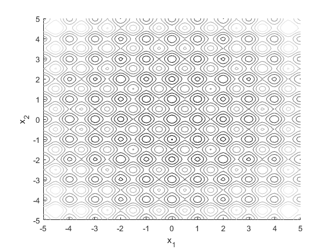
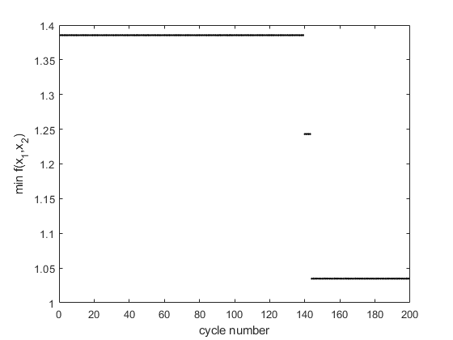

clear all
ul = -5;
uh = 5;
x = [ul:0.1:uh];
y = [ul:0.1:uh];
for i=1:length(x)
for j=1:length(y)
f(i,j) = 20+x(i)^2+y(j)^2-10*(cos(2*pi*x(i))+cos(2*pi*y(j)));
end
end
figure(1);clf;hold on
contour(x,y,f,10)
xlabel('x_1')
ylabel('x_2')
axis([ul uh ul uh])
colormap(gray)
c = .5;
n = 50;
x1 = ul+rand(10,1)*uh;
x2 = ul+rand(10,1)*uh;
f = 20+x1.^2+x2.^2-10*(cos(2*pi*x1)+cos(2*pi*x2));
T = abs(mean(f));
p = 1;
i = 1;
vicinity_radius = 2;
X = ul+(uh-ul)*rand(2,1);
X_best = X;
fbest(1) = 1000;
while p<200
f = 20+X(1).^2+X(2).^2-10*(cos(2*pi*X(1))+cos(2*pi*X(2)));
X_new(1) = max(X(1)-vicinity_radius,ul)+rand*(min(X(1)+vicinity_radius,uh)-max(X(1)-vicinity_radius,ul));
X_new(2) = max(X(2)-vicinity_radius,ul)+rand*(min(X(2)+vicinity_radius,uh)-max(X(2)-vicinity_radius,ul));
f_new = 20+X_new(1).^2+X_new(2).^2-10*(cos(2*pi*X_new(1))+cos(2*pi*X_new(2)));
if f_new<f
X = X_new;
if f_new<min(fbest)
X_best = X;
fbest(p) = min(min(fbest),f_new);
end
elseif exp(-(f_new-f)/T)<rand
X = X_new;
end
i = i+1;
if i>=n
fbest(p) = min(fbest);
p = p+1;
i = 1;
T = c*T;
end
end
X_best
figure(1)
plot(X_best(1),X_best(2),'k.')
figure(2)
plot(fbest,'k.')
xlabel('cycle number')
ylabel('min f(x_1,x_2)')
X_best =
0.0025 -1.0089
 